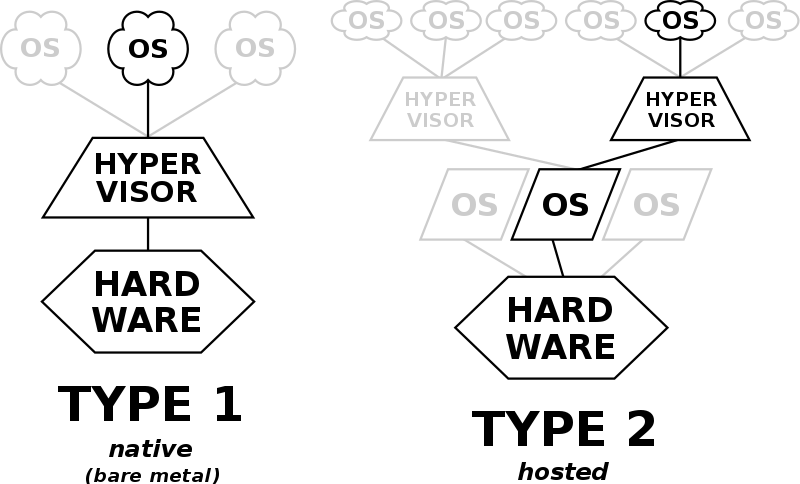

Weight: 1
Candidates should understand the implications of virtualization and cloud computing on a Linux guest system.
Key Knowledge Areas
- Understand the general concept of virtual machines and containers
- Understand common elements virtual machines in an IaaS cloud, such as computing instances, block storage and networking
- Understand unique properties of a Linux system which have to changed when a system is cloned or used as a template
- Understand how system images are used to deploy virtual machines, cloud instances and containers
- Understand Linux extensions which integrate Linux with a virtualization product. Awareness of cloud-init
Terms
- Virtual machine
- Linux container
- Application container
- Guest drivers
- SSH host keys
- D-Bus machine id
Introduction
Virtual machines (VMs) are are simulated computers. Using Virtual Machines you can create new computers on top of your running machine and install new OSs there. In some cases its also possible to run only parts of an OS on top of current OS; this is called having containers.
To run virtual machines, we need Hypervisor software (also called Virtual Machine Managers (VMM)). We have two types of Hypervisors.
To check and see if your host operating system / CPU, supports using hypervisors check for the vmx (for Intel CPUs) or svm (for AMD CPUs) in your /proc/cpuinfo.
You many need to turn the Hypervisor option On using your BIOS or UEFI.
Based on your CPU you should have kvm or kvm-amd kernel modules loaded.
lsmod | grep -i kvm
sudo modprobe kvm
if you see
hypervisorin your/proc/cpuinfoit means that you are inside a virtualized linux machine :)
Now, lets see the 2 types of hypervisors. First the type 2, since its easier to understand.

Type 2 Hypervisor
These hypervisors run on a conventional operating system (OS) just as other computer programs do. A guest operating system runs as a process on the host. Type-2 hypervisors abstract guest operating systems from the host operating system.
In other words, type 2 hypervisor is a software between the guest and host. It completely runs on the host OS and provides virtualization to the guest.
Two of the most famous Type 2 hypervisor on linux are VirtualBox (from Oracle) and VMWare.
Type 1 Hypervisor
These hypervisors run directly on the host's hardware to control the hardware and to manage guest operating systems. For this reason, they are sometimes called bare-metal hypervisors. The first hypervisors, which IBM developed in the 1960s, were native hypervisors. These included the test software SIMMON and the CP/CMS operating system, the predecessor of IBM z/VM.
Some of the most famous Type 2 hypervisor on linux KVM, Xen & Hyper-V. From Linux Kernel version 2.6.20, KVM is build-in.
Creating a Virtual Machine
First we create the machine itself. We tell the hypervisor how much ram/disk/cpu/... we need and name our machine. Then we need to install the guest OS. This can be done using:
- installing from a CD / DVD / ...
- Cloning an existing machine
- Using Open Virtualization Format (OVF) to move machines between hypervisors. This is an standard format for virtual machine definition and may include several files, in this case you can archive all of them into one Open Virtualization Archive (OVA) file.
- It is also possible to create Templates which are master copies to initiate new machines
You may need to install some guest drivers or additions to help your hypervisor have a better control on your guest machine. These might include graphical drivers for virtualbox or scripts to help vmware to control a guest machine or check its status.
Guest specific configs
There are some configurations which are machine specific. For example a network cards MAC address should be uniq in the whole network. If we are cloning a machine or sometimes creating them from templates, we need to at least change these on each machine before booting them:
- Host Name
- NIC MAC Address
- NIC IP (if not using DHCP)
- Machine ID (delete the
/etc/machine-idand/var/lib/dbus/machine-idand rundbus-uuidgen --ensure. These two files might be soft links to each other) - Encryption Keys like SSH Fingerprints and PGP keys
- HDD UUIDs
- Any other UUIDs on the system
Some configs might be empty on templates, do not forget to fill them too.
Containers

In previous sections, we were dealing with complete guest OSs. But its also possible to virtualize only parts of an OS; this is called OS level virtualization.
OS-level virtualization is an operating system (OS) paradigm in which the kernel allows the existence of multiple isolated user space instances, called containers.
This can be done to run an application or a service or even running most parts of a new OS for test purposes.
IaaS
As the name implies, Infrastructure as a Service or IaaS means offloading parts of your infrastructure to other companies. This means buying services like electricity, cooling and even running hypervisors to another company and just rent your VirtualMachine from them. This makes your life easier because things like "Adding New Hards" now only means paying a bit more for more HDD on your machine; instead of actually buying HDDs and installing, ... This is called cloud! You might even be able to move your machine from one continent to another one just by one click.
Samples of these cloud providers are Amazon Web Services, Google Cloud Platform & Microsoft Azure.
Different cloud providers might provide different levels of Infrastructure or services. These are some examples:
- Load Balancing: distribute incoming requests between your servers
- Block Storage: Providing disks to be configured by you and added to your machines
- Object Storage: Lets you store your data directly; say for photos
- Elasticity: Lets you configure an automated increase/decrease in your service capacity based on request volume
- SaaS: Software as a service lets you use softwares you need, on the cloud as a service. Think of having an online office suite for your company without installing anything on your workstations.
There are programs like cloud-init which help you initialize your cloud machine with ease. This service can help you start machines based on templates on AWS, Azure, Digital Ocean an others with ease.
| ← 102.5 Use RPM and YUM package management | 103.1 Work on the command line → |